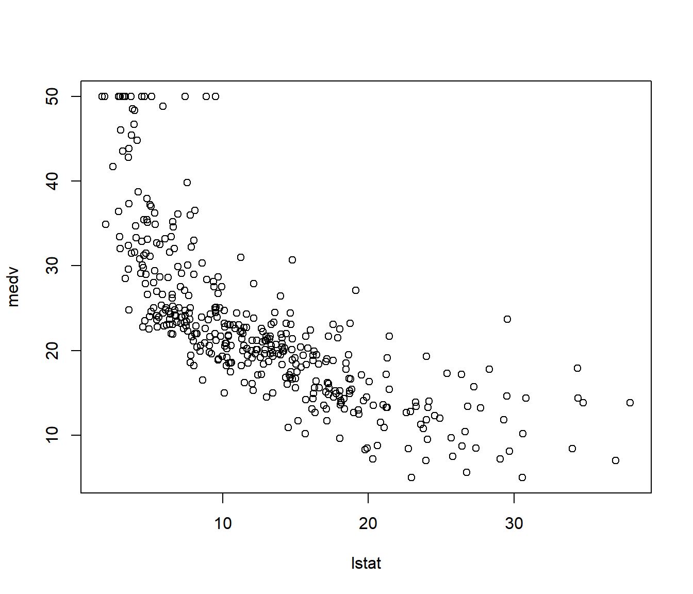
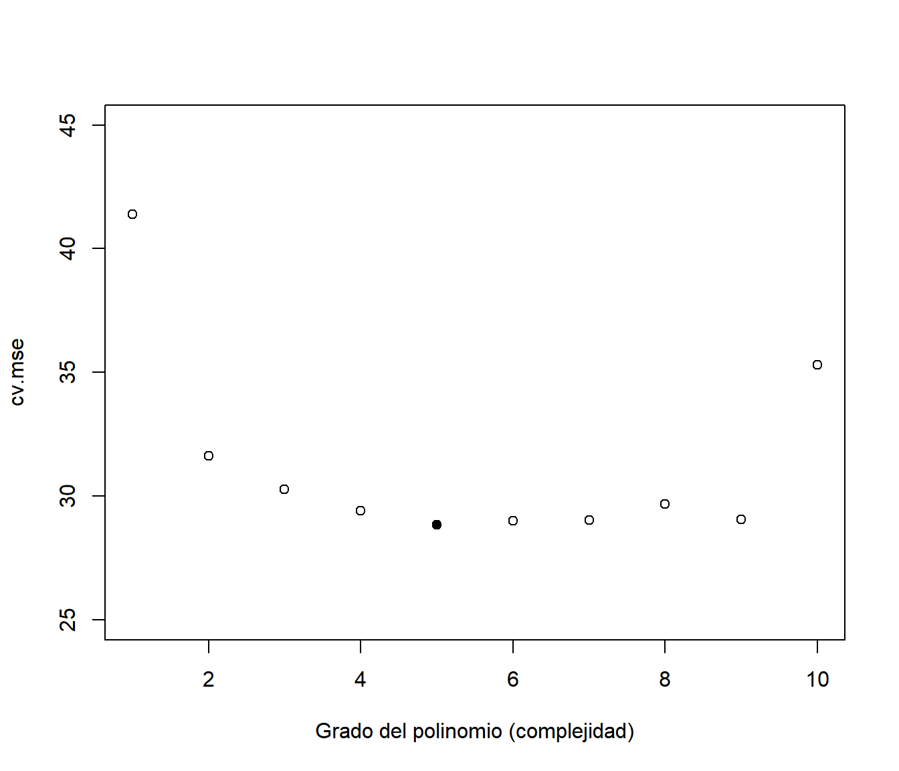
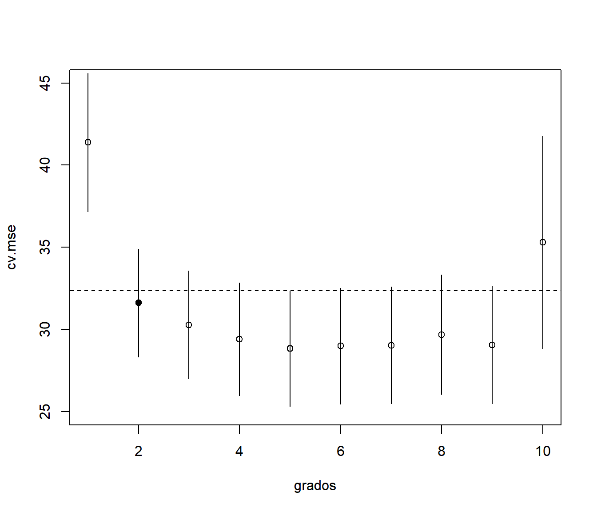
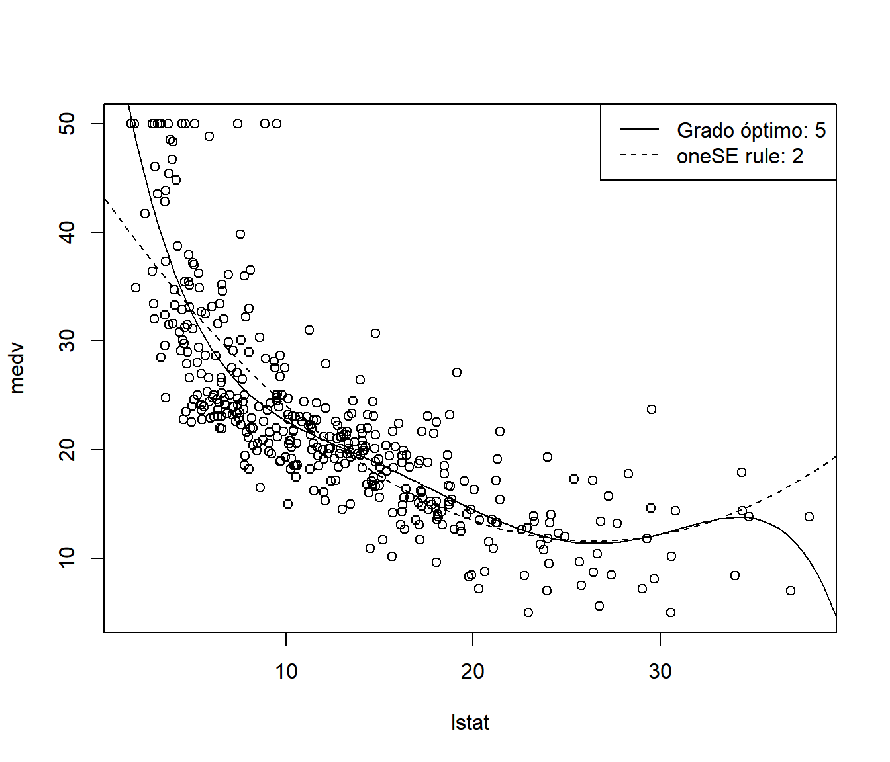
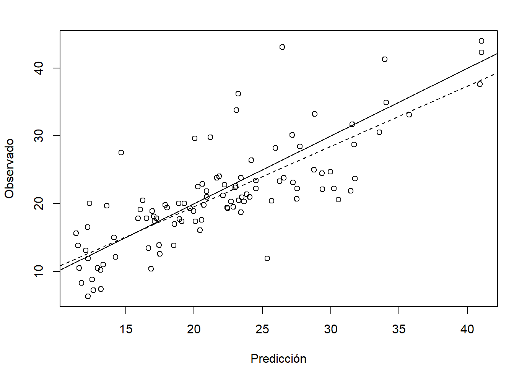
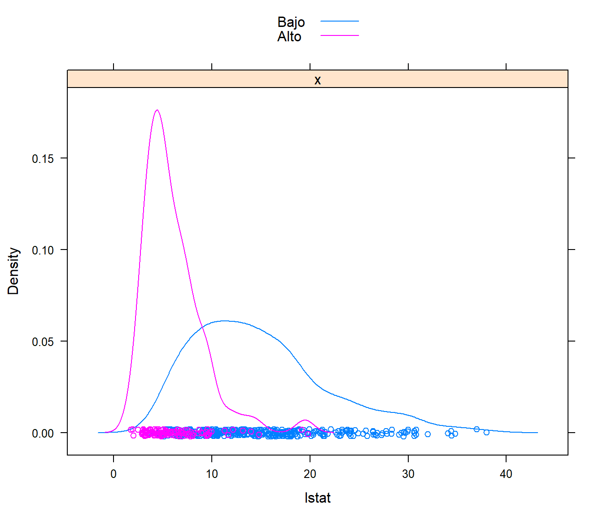

1.3 Construcción y evaluación de los modelos
En Inferencia Estadística clásica el procedimiento habitual es emplear toda la información disponible para construir un modelo válido (que refleje de la forma más fiel posible lo que ocurre en la población) y asumiendo que el modelo es el verdadero (lo que en general sería falso) utilizar métodos de inferencia para evaluar su precisión. Por ejemplo, en el caso de regresión lineal múltiple, el coeficiente de determinación ajustado sería una medida del la precisión del modelo para predecir nuevas observaciones (no se debería emplear el coeficiente de determinación sin ajustar; aunque, en cualquier caso, su validez dependería de la de las suposiciones estructurales del modelo).
Alternativamente, en Estadística Computacional es habitual emplear técnicas de remuestreo para evaluar la precisión (entrenando también el modelo con todos los datos disponibles), principalmente validación cruzada (leave-one-out, k-fold), jackniffe o bootstrap.
Por otra parte, como ya se comentó, algunos de los modelos empleados en AE son muy flexibles (están hiperparametrizados) y pueden aparecer problemas si se permite que se ajusten demasiado bien a las observaciones (podrían llegar a interpolar los datos). En estos casos habrá que controlar el procedimiento de aprendizaje, típicamente a traves de parámetros relacionados con la complejidad del modelo (ver sección siguiente).
En AE se distingue entre parámetros estructurales, los que van a ser estimados al ajustar el modelo a los datos (en el entrenamiento), e hiperparámetros (tuning parameters o parámetros de ajuste), que imponen restricciones al aprendizaje del modelo (por ejemplo determinando el número de parámetros estructurales). Si los hiperparámetros seleccionados producen un modelo demasiado complejo aparecerán problemas de sobreajuste (overfitting) y en caso contrario de infraajuste (undefitting).
Hay que tener en cuenta también que al aumentar la complejidad disminuye la interpretabilidad de los modelos. Se trataría entonces de conseguir buenas predicciones (habrá que evaluar la capacidad predictiva) con el modelo más sencillo posible.
1.3.1 Equilibrio entre sesgo y varianza: infraajuste y sobreajuste
La idea es que queremos aprender más allá de los datos empleados en el entrenamiento (en Estadística diríamos que queremos hacer inferencia sobre nuevas observaciones). Como ya se comentó, en AE hay que tener especial cuidado con el sobreajuste. Este problema ocurre cuando el modelo se ajusta demasiado bien a los datos de entrenamiento pero falla cuando se utiliza en un nuevo conjunto de datos (nunca antes visto).
Como ejemplo ilustrativo emplearemos regresión polinómica, considerando el grado del polinomio como un hiperparámetro que determina la complejidad del modelo. En primer lugar simulamos una muestra y ajustamos modelos polinómicos con distintos grados de complejidad.
# Simulación datos
n <- 30
x <- seq(0, 1, length = n)
mu <- 2 + 4*(5*x - 1)*(4*x - 2)*(x - 0.8)^2 # grado 4
sd <- 0.5
set.seed(1)
y <- mu + rnorm(n, 0, sd)
plot(x, y)
lines(x, mu, lwd = 2)
# Ajuste de los modelos
fit1 <- lm(y ~ x)
lines(x, fitted(fit1))
fit2 <- lm(y ~ poly(x, 4))
lines(x, fitted(fit2), lty = 2)
fit3 <- lm(y ~ poly(x, 20))
# NOTA: poly(x, degree, raw = FALSE) tiene un problema de desbordamiento si degree > 25
lines(x, fitted(fit3), lty = 3)
legend("topright", legend = c("Verdadero", "Ajuste con grado 1",
"Ajuste con grado 4", "Ajuste con grado 20"),
lty = c(1, 1, 2, 3), lwd = c(2, 1, 1, 1))Figura 1.2: Muestra (simulada) y ajustes polinómicos con distinta complejidad.
Como se observa en la Figura 1.2 al aumentar la complejidad del modelo se consigue un mejor ajuste a los datos observados (empleados en el entrenamiento), a costa de un incremento en la variabilidad de las predicciones, lo que puede producir un mal comportamiento del modelo a ser empleado en un conjunto de datos distinto del observado.
Si calculamos medidas de bondad de ajuste, como el error cuadrático medio (MSE) o el coeficiente de determinación, se obtienen mejores resultados al aumentar la complejidad. Como se trata de modelos lineales, podríamos obtener también el coeficiente de determinación ajustado, que sería preferible (en principio, ya que dependería de la validez de las hipótesis estructurales del modelo) para medir la precisión al emplear los modelos en un nuevo conjunto de datos.
knitr::kable(t(sapply(list(fit1 = fit1, fit2 = fit2, fit3 = fit3),
function(x) with(summary(x),
c(MSE = mean(residuals^2), R2 = r.squared, R2adj = adj.r.squared)))), digits = 2)| MSE | R2 | R2adj | |
|---|---|---|---|
| fit1 | 1.22 | 0.20 | 0.17 |
| fit2 | 0.19 | 0.87 | 0.85 |
| fit3 | 0.07 | 0.95 | 0.84 |
Por ejemplo, si generamos nuevas respuestas de este proceso, la precisión del modelo más complejo empeorará considerablemente:
y.new <- mu + rnorm(n, 0, sd)
plot(x, y)
points(x, y.new, pch = 2)
lines(x, mu, lwd = 2)
lines(x, fitted(fit1))
lines(x, fitted(fit2), lty = 2)
lines(x, fitted(fit3), lty = 3)
legend("topright", legend = c("Verdadero", "Muestra", "Ajuste con grado 1", "Ajuste con grado 4",
"Ajuste con grado 20", "Nuevas observaciones"),
lty = c(1, NA, 1, 2, 3, NA), lwd = c(2, NA, 1, 1, 1, NA), pch = c(NA, 1, NA, NA, NA, 2))
Figura 1.3: Muestra con ajustes polinómicos con distinta complejidad y nuevas observaciones.
MSEP <- sapply(list(fit1 = fit1, fit2 = fit2, fit3 = fit3),
function(x) mean((y.new - fitted(x))^2))
MSEP## fit1 fit2 fit3
## 1.4983208 0.1711238 0.2621064Como ejemplo adicional, para evitar el efecto de la aleatoriedad de la muestra, en el siguiente código se simulan 100 muestras del proceso anterior a las que se les ajustan modelos polinómicos variando el grado de 1 a 20. Posteriormente se evalua la precisión en la muestra empleada en el ajuste y en un nuevo conjunto de datos procedente de la misma población.
nsim <- 100
set.seed(1)
grado.max <- 20
grados <- seq_len(grado.max)
mse <- mse.new <- matrix(nrow = grado.max, ncol = nsim) # Error cuadrático medio
for(i in seq_len(nsim)) {
y <- mu + rnorm(n, 0, sd)
y.new <- mu + rnorm(n, 0, sd)
for (grado in grados) { # grado <- 1
fit <- lm(y ~ poly(x, grado))
mse[grado, i] <- mean(residuals(fit)^2)
mse.new[grado, i] <- mean((y.new - fitted(fit))^2)
}
}
# Simulaciones
matplot(grados, mse, type = "l", col = "lightgray", lty = 1, ylim = c(0, 2),
xlab = "Grado del polinomio (complejidad)",
ylab = "Error cuadrático medio")
matlines(grados, mse.new, type = "l", lty = 2, col = "lightgray")
# Global
precision <- rowMeans(mse)
precision.new <- rowMeans(mse.new)
lines(grados, precision, lwd = 2)
lines(grados, precision.new, lty = 2, lwd = 2)
abline(h = sd^2, lty = 3)
abline(v = 4, lty = 3)
legend("topright", legend = c("Muestras", "Nuevas observaciones"), lty = c(1, 2))Figura 1.4: Precisiones (errores cuadráticos medios) de ajustes polinómicos variando la complejidad, en las muestras empleadas en el ajuste y en nuevas observaciones (simulados).
Como se puede observar en la Figura 1.4 los errores de entrenamiento disminuyen a medida que aumenta la complejidad del modelo. Sin embargo los errores de predicción en nuevas observaciones primero disminuyen hasta alcanzar un mínimo, marcado por la línea de puntos vertical que se corresponde con el modelo de grado 4, y después aumentan (la línea de puntos horizontal es la varianza del proceso; el error cuadrático medio de predicción asintótico). La línea vertical representa el equilibrio entre el sesgo y la varianza. Considerando un valor de complejidad a la izquierda de esa línea tendríamos infraajuste (mayor sesgo y menor varianza) y a la derecha sobreajuste (menor sesgo y mayor varianza).
En general, al aumentar la complejidad disminuye el sesgo y aumenta la varianza (y viceversa). Será necesario seleccionar los hiperparámetros de forma que haya un equilibrio entre el sesgo y la varianza (es lo que se conoce como bias-variance tradeoff).
1.3.2 Datos de entrenamiento y datos de test
Como se mostró en la sección anterior hay que tener mucho cuidado si se pretende evaluar la precisión de las predicciones empleando la muestra de entrenamiento.
Si el número de observaciones no es muy grande, se puede entrenar el modelo con todos los datos y emplear técnicas de remuestreo para evaluar la precisión (típicamente validación cruzada o bootstrap). Habría que asegurase de que el procedimiento de remuestreo empleado es adecuado (por ejemplo, la presencia de dependencia requeriría de métodos más sofisticados).
Sin embargo, si el número de obervaciones es grande, se suele emplear el procedimiento tradicional en ML, que consiste en particionar la base de datos en 2 (o incluso en 3) conjuntos (disjuntos):
Conjunto de datos de entrenamiento (o aprendizaje) para construir los modelos.
Conjunto de datos de test para evaluar el rendimiento de los modelos.
Los datos de test deberían utilizarse únicamente para evaluar los modelos finales, no se deberían emplear para seleccionar hiperparámetros. Para seleccionalos se podría volver a particionar los datos de entrenamiento, es decir, dividir la muestra en tres subconjuntos: datos de entrenamiento, de validación y de test (por ejemplo considerando un 70%, 15% y 15% de las observaciones, respectivamente). Para cada combinación de hiperparámetros se ajustaría el correspondiente modelo con los datos de entrenamiento, se emplearían los de validación para evaluarlos y posteriormente seleccionar los valores “óptimos”. Por último, se emplean los datos de test para evaluar el rendimiento del modelo seleccionado. No obstante, lo más habitual es seleccionar los hiperparámetros empleando validación cruzada (o otro tipo de remuestreo) en la muestra de entrenamiento, en lugar de considerar una muestra adicional de validación. En la siguiente sección se describirá esta última aproximación.
En R se puede realizar el particionamiento de los datos empleando la función sample() del paquete base (otra alternativa sería emplear la función createDataPartition del paquete caret como se describe en la Sección 1.5). Típicamente se selecciona el 80% de los datos como muestra de entrenamiento y el 20% restante como muestra de test, aunque esto dependería del número de datos.
Como ejemplo consideraremos el conjunto de datos Boston del paquete MASS que contiene, entre otros datos, la valoración de las viviendas (medv, mediana de los valores de las viviendas ocupadas, en miles de dólares) y el porcentaje de población con “menor estatus” (lstat) en los suburbios de Boston. Podemos contruir las muestras de entrenamiento (80%) y de test (20%) con el siguiente código:
data(Boston, package = "MASS")
# ?Boston
set.seed(1)
nobs <- nrow(Boston)
itrain <- sample(nobs, 0.8 * nobs)
train <- Boston[itrain, ]
test <- Boston[-itrain, ]1.3.3 Validación cruzada
Como ya se comentó, una herramienta para evaluar la calidad predictiva de un modelo es la validación cruzada, que permite cuantificar el error de predicción utilizando una única muestra de datos.
En su versión más simple, validación cruzada dejando uno fuera (Leave-one-out cross-validation, LOOCV), para cada observación de la muestra se realiza un ajuste empleando el resto de observaciones, y se mide el error de predicción en esa observación (único dato no utilizado en el ajuste del modelo). Finalmente, combinando todos los errores individuales se puede obtener medidas globales del error de predicción (o aproximar características de su distribución).
El método de LOOCV requeriría, en principio (ver comentarios más adelante), el ajuste de un modelo para cada observación por lo que pueden aparecer problemas computacionales si el conjunto de datos es grande. En este caso se suele emplear grupos de observaciones en lugar de observaciones individuales. Si se particiona el conjunto de datos en k grupos, típicamente 10 o 5 grupos, se denomina k-fold cross-validation (LOOCV sería un caso particular considerando un número de grupos igual al número de observaciones). Hay muchas variaciones de este método, entre ellas particionar repetidamente de forma aleatoria los datos en un conjunto de entrenamiento y otro de validación (de esta forma algunas observaciones podrían aparecer repetidas veces y otras ninguna en las muestras de validación).
Continuando con el ejemplo anterior, supongamos que queremos emplear regresión polinómica para explicar la valoración de las viviendas (medv) a partir del “estatus” de los residentes (lstat). Al igual que se hizo en la Sección 1.3.1, consideraremos el grado del polinomio como un hiperparámetro.
plot(medv ~ lstat, data = train)
Podríamos emplear la siguiente función que devuelve para cada observación (fila) de una muestra de entrenamiento, el error de predicción en esa observación ajustando un modelo lineal con todas las demás observaciones:
cv.lm0 <- function(formula, datos) {
n <- nrow(datos)
cv.res <- numeric(n)
for (i in 1:n) {
modelo <- lm(formula, datos[-i, ])
cv.pred <- predict(modelo, newdata = datos[i, ])
cv.res[i] <- cv.pred - datos[i, ]
}
return(cv.res)
}La función anterior no es muy eficiente, pero podría modificarse fácilmente para emplear otros métodos de regresión. En el caso de regresión lineal múltiple (y de otros modelos lineales), se pueden obtener fácilmente las predicciones eliminando una de las observaciones a partir del ajuste con todos los datos. Por ejemplo, en lugar de la anterior sería preferible emplear la siguiente función (ver ?rstandard):
cv.lm <- function(formula, datos) {
modelo <- lm(formula, datos)
return(rstandard(modelo, type = "predictive"))
}Empleando esta función, podemos calcular una medida del error de predicción de validación cruzada (en este caso el error cuadrático medio) para cada valor del hiperparámetro (grado del ajuste polinómico) y seleccionar el que lo minimiza.
grado.max <- 10
grados <- seq_len(grado.max)
cv.mse <- cv.mse.sd <- numeric(grado.max)
for(grado in grados){
cv.res <- cv.lm(medv ~ poly(lstat, grado), train)
se <- cv.res^2
cv.mse[grado] <- mean(se)
cv.mse.sd[grado] <- sd(se)/sqrt(length(se))
}
plot(grados, cv.mse, ylim = c(25, 45),
xlab = "Grado del polinomio (complejidad)")
# Valor óptimo
imin.mse <- which.min(cv.mse)
grado.op <- grados[imin.mse]
points(grado.op, cv.mse[imin.mse], pch = 16)
grado.op## [1] 5En lugar de emplear los valores óptimos de los hiperparámetros, Breiman et al. (1984) propusieron la regla de “un error estándar” para seleccionar la complejidad del modelo. La idea es que estamos trabajando con estimaciones de la precisión y pueden presentar variabilidad, por lo que la sugerencia es seleccionar el modelo más simple6 dentro de un error estándar de la precisión del modelo correspondiente al valor óptimo (se consideraría que no hay diferencias significativas en la precisión; además, se mitigaría el efecto de la variabilidad debida a aleatoriedad/semilla).
plot(grados, cv.mse, ylim = c(25, 45))
segments(grados, cv.mse - cv.mse.sd, grados, cv.mse + cv.mse.sd)
# Límite superior "oneSE rule" y complejidad mínima por debajo de ese valor
upper.cv.mse <- cv.mse[imin.mse] + cv.mse.sd[imin.mse]
abline(h = upper.cv.mse, lty = 2)
imin.1se <- min(which(cv.mse <= upper.cv.mse))
grado.1se <- grados[imin.1se]
points(grado.1se, cv.mse[imin.1se], pch = 16)
grado.1se## [1] 2plot(medv ~ lstat, data = train)
fit.op <- lm(medv ~ poly(lstat, grado.op), train)
fit.1se <- lm(medv ~ poly(lstat, grado.1se), train)
newdata <- data.frame(lstat = seq(0, 40, len = 100))
lines(newdata$lstat, predict(fit.op, newdata = newdata))
lines(newdata$lstat, predict(fit.1se, newdata = newdata), lty = 2)
legend("topright", legend = c(paste("Grado óptimo:", grado.op), paste("oneSE rule:", grado.1se)),
lty = c(1, 2))
1.3.4 Evaluación de un método de regresión
Para estudiar la precisión de las predicciones de un método de regresión se evalúa el modelo en el conjunto de datos de test y se comparan las predicciones frente a los valores reales.
Si generamos un gráfico de dispersión de observaciones frente a predicciones, los puntos deberían estar en torno a la recta \(y=x\) (línea continua).
obs <- test$medv
pred <- predict(fit.op, newdata = test)
plot(pred, obs, main = "Observado frente a predicciones",
xlab = "Predicción", ylab = "Observado")
abline(a = 0, b = 1)
res <- lm(obs ~ pred)
# summary(res)
abline(res, lty = 2)
También es habitual calcular distintas medidas de error. Por ejemplo, podríamos emplear la función postResample() del paquete caret:
caret::postResample(pred, obs)## RMSE Rsquared MAE
## 4.8526718 0.6259583 3.6671847La función anterior, además de las medidas de error habituales (que dependen en su mayoría de la escala de la variable respuesta) calcula un pseudo R-cuadrado. En este paquete (también en rattle) se emplea uno de los más utilizados, el cuadrado del coeficiente de correlación entre las predicciones y los valores observados (que se corresponde con la línea discontinua en la figura anterior). Estos valores se interpretarían como el coeficiente de determinación en regresión lineal, debería ser próximo a 1. Hay otras alternativas (ver Kvålseth, 1985), pero la idea es que deberían medir la proporción de variabilidad de la respuesta explicada por el modelo, algo que en general no es cierto con el anterior7. La recomendación sería emplear: \[\tilde R^2 = 1 - \frac{\sum_{i=1}^n(y_i - \hat y_i)^2}{\sum_{i=1}^n(y_i - \bar y_i)^2}\] implementado junto con otras medidas en la siguiente función:
accuracy <- function(pred, obs, na.rm = FALSE,
tol = sqrt(.Machine$double.eps)) {
err <- obs - pred # Errores
if(na.rm) {
is.a <- !is.na(err)
err <- err[is.a]
obs <- obs[is.a]
}
perr <- 100*err/pmax(obs, tol) # Errores porcentuales
return(c(
me = mean(err), # Error medio
rmse = sqrt(mean(err^2)), # Raíz del error cuadrático medio
mae = mean(abs(err)), # Error absoluto medio
mpe = mean(perr), # Error porcentual medio
mape = mean(abs(perr)), # Error porcentual absoluto medio
r.squared = 1 - sum(err^2)/sum((obs - mean(obs))^2) # Pseudo R-cuadrado
))
}
accuracy(pred, obs)## me rmse mae mpe mape r.squared
## -0.6731294 4.8526718 3.6671847 -8.2322506 19.7097373 0.6086704accuracy(predict(fit.1se, newdata = test), obs)## me rmse mae mpe mape r.squared
## -0.9236280 5.2797360 4.1252053 -9.0029771 21.6512406 0.53676081.3.5 Evaluación de un método de clasificación
Para estudiar la eficiencia de un método de clasificación supervisada se obtienen las predicciones para el conjunto de datos de test y se genera una tabla de contingencia, denominada matriz de confusión, con las predicciones frente a los valores reales.
En primer lugar consideraremos el caso de dos categorías. La matriz de confusión será de la forma:
| Observado\Predicción | Positivo | Negativo |
|---|---|---|
| Verdadero | Verdaderos positivos (TP) | Falsos negativos (FN) |
| Falso | Falsos positivos (FP) | Verdaderos negativos (TN) |
A partir de esta tabla se pueden obtener distintas medidas de la precisión de las predicciones. Por ejemplo, dos de las más utilizadas son la tasa de verdaderos positivos y la de verdaderos negativos (tasas de acierto en positivos y negativos), también denominadas sensibilidad y especificidad:
Sensibilidad (sensitivity, recall, hit rate, true positive rate; TPR): \[TPR = \frac{TP}{P} = \frac{TP}{TP+FN}\]
Especificidad (specificity, true negative rate; TNR): \[TNR = \frac{TN}{TN+FP}\]
La precisión global o tasa de aciertos (accuracy; ACC) sería: \[ACC = \frac{TP + TN}{P + N} = \frac{TP+TN}{TP+TN+FP+FN}\] Sin embargo hay que tener cuidado con esta medida cuando las clases no están balanceadas8. Otras medidas de la precisión global que tratan de evitar este problema son la precisión balanceada (balanced accuracy, BA): \[BA = \frac{TPR + TNR}{2}\] (media aritmética de TPR y TNR) o la puntuación F1 (F1 score; media armónica de TPR y TNR): \[F_1 = \frac{2TP}{2TP+FP+FN}\] Otra medida global es el coeficiente kappa de Cohen, que compara la tasa de aciertos con la obtenida en una clasificación al azar (un valor de 1 indicaría máxima precisión y 0 que la precisión es igual a la que obtendríamos clasificando al azar; empleando la tasa de positivos, denominada prevalencia, para predecir positivo).
NOTA: La precisión global (ACC) no debe ser confundida con el índice predictivo positivo (precision, positive predictive value; PPV): \(PPV = TP/(TP+FP)\).
Como ejemplo emplearemos los datos anteriores de valoraciones de viviendas y estatus de la población, considerando como respuesta una nueva variable fmedv que clasifica las valoraciones en “Bajo” o “Alto” dependiendo de si medv > 25.
# data(Boston, package = "MASS")
datos <- Boston
datos$fmedv <- factor(datos$medv > 25, labels = c("Bajo", "Alto")) # levels = c('FALSE', 'TRUE')
# En este caso las clases no están balanceadas
table(datos$fmedv)##
## Bajo Alto
## 382 124caret::featurePlot(datos$lstat, datos$fmedv, plot = "density",
labels = c("lstat", "Density"), auto.key = TRUE)
El siguiente código realiza la partición de los datos y posteriormente ajustar un modelo de regresión logística en la muestra de entrenamiento considerando lstat como única variable explicativa:
# Particionado de los datos
set.seed(1)
nobs <- nrow(datos)
itrain <- sample(nobs, 0.8 * nobs)
train <- datos[itrain, ]
test <- datos[-itrain, ]
# Ajuste modelo
modelo <- glm(fmedv ~ lstat, family = binomial, data = train)
summary(modelo)##
## Call:
## glm(formula = fmedv ~ lstat, family = binomial, data = train)
##
## Deviance Residuals:
## Min 1Q Median 3Q Max
## -1.9749 -0.4161 -0.0890 0.3785 3.6450
##
## Coefficients:
## Estimate Std. Error z value Pr(>|z|)
## (Intercept) 3.74366 0.47901 7.815 5.48e-15 ***
## lstat -0.54231 0.06134 -8.842 < 2e-16 ***
## ---
## Signif. codes: 0 '***' 0.001 '**' 0.01 '*' 0.05 '.' 0.1 ' ' 1
##
## (Dispersion parameter for binomial family taken to be 1)
##
## Null deviance: 460.84 on 403 degrees of freedom
## Residual deviance: 243.34 on 402 degrees of freedom
## AIC: 247.34
##
## Number of Fisher Scoring iterations: 7En este caso podemos obtener las estimaciones de la probabilidad de la segunda categoría empleando predict() con type = "response", a partir de las cuales podemos establecer las predicciones como la categoría más probable:
obs <- test$fmedv
p.est <- predict(modelo, type = "response", newdata = test)
pred <- factor(p.est > 0.5, labels = c("Bajo", "Alto")) # levels = c('FALSE', 'TRUE')Podemos obtener la matriz de confusión con el siguiente código:
tabla <- table(obs, pred)
# addmargins(tabla, FUN = list(Total = sum))
tabla## pred
## obs Bajo Alto
## Bajo 71 11
## Alto 8 12# Porcentajes respecto al total
print(100*prop.table(tabla), digits = 2) ## pred
## obs Bajo Alto
## Bajo 69.6 10.8
## Alto 7.8 11.8# Porcentajes (de aciertos y fallos) por categorías
print(100*prop.table(tabla, 1), digits = 3) ## pred
## obs Bajo Alto
## Bajo 86.6 13.4
## Alto 40.0 60.0Alternativamente se podría emplear la función confusionMatrix() del paquete caret que permite obtener distintas medidas de la precisión:
caret::confusionMatrix(pred, obs, positive = "Alto", mode = "everything")## Confusion Matrix and Statistics
##
## Reference
## Prediction Bajo Alto
## Bajo 71 8
## Alto 11 12
##
## Accuracy : 0.8137
## 95% CI : (0.7245, 0.884)
## No Information Rate : 0.8039
## P-Value [Acc > NIR] : 0.4604
##
## Kappa : 0.4409
##
## Mcnemar's Test P-Value : 0.6464
##
## Sensitivity : 0.6000
## Specificity : 0.8659
## Pos Pred Value : 0.5217
## Neg Pred Value : 0.8987
## Precision : 0.5217
## Recall : 0.6000
## F1 : 0.5581
## Prevalence : 0.1961
## Detection Rate : 0.1176
## Detection Prevalence : 0.2255
## Balanced Accuracy : 0.7329
##
## 'Positive' Class : Alto
## A partir de aquí en preparación…
Evaluación de las estimaciones de las probabilidades:
Curva ROC
AUC
Caso de más de dos categorías:
Medidas globales: precisión y kappa.
Medidas por categoría: estrategia “uno contra todos”. caret::confusionMatrix()$byClass
Suponiendo que los modelos se pueden ordenar del más simple al más complejo.↩
Por ejemplo obtendríamos el mismo valor si desplazamos las predicciones sumando una constante (i.e. no tiene en cuenta el sesgo).↩
También hay que tener cuidado las medidas que utilizan la prevalencia estimada a partir de la muestra de test, como el índice predictivo positivo y negativo, si la muestra de test no refleja lo que ocurre en la población (por ejemplo si la clase de interés está sobrerrepresentada en la muestra).↩